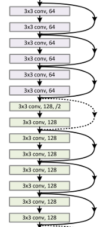

ResNet
Residiual Networks were invented 2015 and popularized around 2017. Has been cited over 40,000 times.
The vanishing gradient problem is that error function flattens, and descent becomes more useless as you add more layers. Picture the gradient in Gradient Descent and Back Propagation with the surface flattening. Example: 20 layers is good, but 56 layers is worse.
Identity matrices are introduced into the layers, to allow layers to be skipped:

(source)